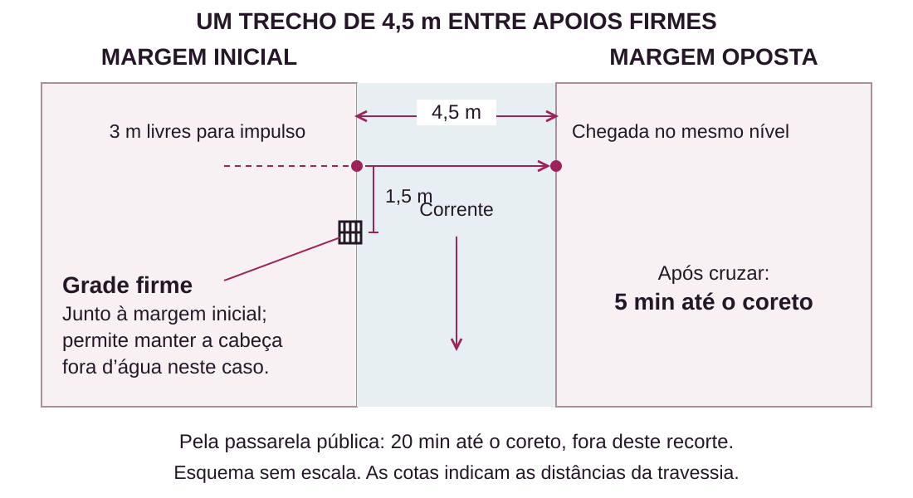

PREPARAR AVENTURAS
Ideias para aventuras
Escolha uma situação que interesse ao grupo, alguém que se importe e um lugar onde seja possível agir. Acrescente uma complicação quando ela decorrer do que está acontecendo. Depois, use as cinco perguntas de Preparar aventuras para completar o preparo.
Todo este conjunto é original e não revela a trama de Jujutsu Kaisen. Você pode escolher as ideias, adaptá-las ou combinar partes. As oito situações são pontos de partida; os dois exemplos ao final mostram combinações com fatos e resolução já definidos.
Antes de usar uma ameaça, prepare sua ficha, seus efeitos e os meios de enfrentá-la, inclusive a conversão pertinente se puder ser obtida como entidade. As pessoas abaixo têm perfis de interpretação; capacidades numéricas exigem uma ficha adequada ao uso. Os exemplos preenchidos trabalham investigação, conversa e travessia, com as regras indicadas junto da ação.
Oito situações para começar
1. Luz na sala de projeção
Chamado institucional. Leda viu uma criatura se recolher entre as cadeiras quando acendeu a luz do cinema fechado. Quer buscar objetos pessoais, mas prefere esperar do lado de fora. Uma escola ou rede local pede ao grupo que avalie a ocorrência. Prepare uma maldição presente, seus sinais, comportamento e ficha. Os personagens podem recolher informações, procurar outro acesso, proteger o lugar ou enfrentar a ameaça. A luz orienta seu comportamento, sem conceder uma fraqueza mecânica que a ficha não tenha.
2. Depois do primeiro chamado
Apoio a um aprendiz. Caio voltou de uma ocorrência e quer entender uma decisão que tomou. Um contato pede ao grupo que o ouça. Ele lembra o que viu, mas mistura observações com conclusões sobre a maldição. Prepare os fatos daquele chamado e quem mais os conhece. Os personagens podem rever o acontecimento com ele, procurar uma fonte ou compartilhar uma experiência própria. A conversa pode terminar com uma pergunta melhor para a próxima missão, sem conceder treinamento ou benefício de ficha.
3. A assinatura no coreto
Iniciativa dos personagens. Nori encontrou um banco rachado perto de uma fita usada por Rei e suspeita de relação entre os dois. Rei quer esclarecer o ocorrido. O grupo pode decidir ajudar, ouvir testemunhas e examinar o lugar. Separe a história do vestígio da causa do dano. Esta ideia é desenvolvida em A assinatura no coreto, ao final: uma investigação com meios comuns e uma leitura energética possível, sem exigir essa perícia para continuar.
4. O que ficou no cinema
Interesse pessoal. Leda encontra fotografias de uma antiga apresentação e quer rever quem participou. Pergunte se alguma personagem tem ligação com o lugar ou deseja acompanhá-la. Prepare as pessoas acessíveis e aquilo que cada uma lembra. O grupo pode reunir versões, procurar uma gravação ou organizar um reencontro. Uma lembrança pode ter significados diferentes para os participantes. O encontro pode terminar com a escolha do que querem guardar, sem uma ameaça obrigatória no passado.
5. Uma canção para cada um
Convivência. Dara convida o grupo para um ensaio aberto no coreto. Quer conhecer sons e músicas que as personagens gostam. Nori oferece espaço, enquanto outros participantes sugerem como tocar juntos. Cada jogador escolhe o que deseja compartilhar, ouvir ou fazer. Uma personagem pode contar uma lembrança; outra prefere marcar o ritmo ou observar. O encontro pode terminar numa apresentação imperfeita e prazerosa. A cena preenchida mais adiante mostra como encerrá-lo sem transformá-lo em missão.
6. Ensaio na outra margem
Apoio cotidiano. Dara quer chegar ao coreto com suas partituras secas. O caminho cruza um canal, e a passarela pública fica num contorno mais demorado. Joana conhece os dois percursos. O grupo pode acompanhá-la, procurar uma solução seca, cruzar separadamente ou avisar do atraso. Prepare margens, distância e consequência antes de qualquer travessia. O segundo exemplo preenchido usa um obstáculo já demonstrado no Guia, com alternativa por terra e sem exigir uma técnica específica.
7. O último ônibus
Proteção de pessoas. Relatos indicam que uma maldição ronda o terminal quando os últimos passageiros chegam. Prepare quem a viu, onde ela pode ser percebida, sua ficha e o que desencadeia sua ação. As pessoas precisam de caminhos compreensíveis para sair da área. O objetivo pode ser conduzi-las a outro embarque, localizar a ameaça ou exorcizá-la. Considere o que os personagens conseguem perceber e fazer; o horário dos ônibus oferece contexto, sem gerar ataques ou dano por si só.
8. Um pedido vindo da água
Contato sobrenatural. Uma maldição capaz de conversar pede que retirem um objeto comum da margem do canal. Ela o reconhece e quer conservá-lo, mas outras pessoas a temem. Prepare sua ficha, o motivo do pedido, o perigo real e como se comunica. O grupo pode ouvir, verificar a história, negociar ou recusar. A conversa permite descobrir interesses, sem garantir confiança, acordo ou aquisição da criatura. O que ela faz depois decorre de sua intenção, meios e escolhas em jogo.
Seis pessoas para encontrar
Rei, feiticeira independente
Rei quer fazer seu trabalho sem ser responsabilizada por toda manifestação próxima. Costuma repetir o que observou antes de dizer o que concluiu. Ajuda quem pergunta por fatos; reage mal quando lhe atribuem uma intenção sem ouvi-la. Pode explicar sua passagem pelo coreto e procurar quem presenciou o treino. Aceita corrigir um erro próprio quando ele é demonstrado. Sua independência não a torna dona de toda informação da região.
Nori, cuidador do coreto
Nori quer manter o lugar disponível para encontros. Recolhe cadeiras enquanto conversa e lembra das pessoas pelas atividades de que gostam. Conta o que viu e admite quando apenas ouviu um comentário. Fica mais disposto a mudar uma decisão quando entende como a proposta protege o espaço. Pode oferecer companhia e mostrar acessos; condições de uso e materiais dependem do que realmente estiver disponível.
Dara, musicista de corpo construído
Dara é um Corpo Amaldiçoado com interesses e consciência próprios. Quer compor com outras pessoas e leva um caderno cheio de anotações. Experimenta um ritmo na mesa antes de explicar uma ideia. Aceita ajuda que conserve suas escolhas; diz quando prefere seguir por outro caminho. Sua participação num encontro não depende de precisar comer ou beber. Regras de corpo, reparo e capacidades seguem a ficha quando forem necessárias.
Joana, conhecedora das hortas
Joana cuida de uma horta junto ao canal e quer que os caminhos sejam usados com segurança. Antes de apontar um atalho, mostra o destino e pergunta o que as pessoas levam. Conhece a passarela pública e os apoios locais. Pode descrever uma travessia ou oferecer um meio que já possua, mas não promete atravessar por alguém. Uma contribuição concreta pode ser avaliada por Ajudar; sua presença, sozinha, não concede vantagem.
Caio, aprendiz fora de um clã
Caio descobriu o jujutsu recentemente e quer ser levado a sério sem fingir que sabe tudo. Faz perguntas rápidas e depois tenta reformular uma delas com cuidado. Fala melhor quando alguém separa dúvida de falta de valor pessoal. Pode pedir companhia para conhecer um contato ou contar uma situação que não compreendeu. Escolha sua ficha antes de usar poderes em cena; o desejo de impressionar não cria capacidade nem obriga comportamento imprudente.
Leda, antiga projecionista
Leda quer decidir o futuro dos objetos e lembranças do cinema onde trabalhou. Guarda pequenos detalhes de sessões antigas e aponta o lugar onde cada pessoa costumava sentar. Coopera com perguntas sobre o prédio; precisa de tempo para decidir o destino de algo pessoal. Uma proposta de preservação pode interessá-la, mas outra pessoa não escolhe por ela. Conhecer o cinema não significa compreender automaticamente um fenômeno jujutsu.
Quatro lugares para usar
O coreto da praça
Um espaço circular de 6 m de diâmetro, com colunas e piso firme, recebe ensaios e conversas. Um banco fica na área externa; um caminho livre liga o lugar às ruas da praça. Descreva o que há à vista e onde as pessoas estão. Nori conhece o uso cotidiano. O lugar pode sustentar uma celebração, um encontro reservado ou a investigação de um vestígio, conforme o que foi preparado.
O canal das hortas
Água separa dois acessos firmes usados por quem cuida das hortas. Joana conhece a correnteza e o contorno até uma passarela pública. Para uma travessia, defina largura, apoios, percurso e consequência da falha. O exemplo Ensaio na outra margem fornece esses dados. Em outras situações, o canal pode oferecer uma conversa, uma busca pela margem ou uma alternativa de caminho, sem repetir o mesmo obstáculo.
O cinema fechado
A entrada principal dá acesso ao saguão; uma porta lateral de serviço leva ao corredor junto à sala de projeção. Leda conhece essas ligações e o que ainda pode ser aberto. Fotografias, cadeiras e equipamentos mostram usos anteriores. Escolha iluminação, estado das estruturas e áreas acessíveis antes de usar um risco. Para combate ou movimento preciso, complete a planta e as distâncias; a descrição não estabelece medidas táticas.
O pequeno terminal
Um abrigo aberto e bancos ficam diante das plataformas. Há acesso pela rua e uma passagem de pedestres até o bairro. Passageiros, trabalhadores e vendedores conhecem partes diferentes da rotina. A multidão pode oferecer testemunhas e assuntos de conversa. Se sua presença interferir numa ação, descreva como e use a regra pertinente; ela não impõe uma penalidade universal de percepção, movimento ou influência.
Seis complicações possíveis
Um acesso ficou indisponível
Uma obra, mudança no lugar ou acontecimento anterior impede o percurso que o grupo conhecia. Mostre o impedimento e as alternativas acessíveis antes da escolha. Use essa complicação quando houver uma causa preparada; uma passagem recém-descoberta não precisa ser fechada para preservar o caminho que você imaginou.
A pessoa precisa sair
Uma testemunha tem um compromisso e informa até quando consegue conversar. O grupo pode priorizar perguntas, acompanhá-la ou combinar contato. O prazo pode gerar uma escolha sem apagar o que ela sabe. A demora para esclarecer uma descrição do mestre não vira, por si só, tempo perdido na história.
Duas vontades pedem espaço
Uma pessoa quer conversar em particular; outra quer incluir o grupo. Descubra o motivo de cada pedido e ofereça a decisão. Alternar conversas ou combinar outro momento pode atender às duas. O conflito precisa existir entre aquelas pessoas, em vez de surgir como penalidade automática por ajudar alguém.
Outra equipe já esteve aqui
Há uma mudança confirmada por outra mesa. Confira o registro, quem conhece o resultado e quais perguntas permanecem. Use essa informação para continuar do estado atual. Uma ameaça resolvida continua resolvida; um encaminhamento aceito pode ainda depender de intervenção.
O horário mudou
Um encontro, transporte ou apresentação teve seu horário alterado. Defina quem soube e por qual meio o grupo pode descobrir. A notícia oferece a possibilidade de reorganizar planos. Preserve o tempo já passado e dê efeito aos avisos que os personagens conseguirem transmitir.
O relato mistura fato e conclusão
Alguém viu um efeito e atribuiu uma causa sem confirmá-la. Prepare o que realmente percebeu e os meios de examinar a hipótese. Ao conversar, essa pessoa pode reconhecer a diferença. Se a confusão veio da sua descrição, esclareça-a diretamente, sem cobrar outro teste para entender a frase.
Combinação 1: A assinatura no coreto
Use: situação 3, Rei e Nori, coreto e relato que mistura fato e conclusão. O objetivo é esclarecer o dano a um banco e o que o vestígio energético significa. Este preparo não inclui uma ameaça de combate.
O que aconteceu
Rei treinou no coreto entre 17h e 17h10 e deixou uma fita presa a uma coluna para marcar sua posição. O preparo estabelece que a fita ainda conserva resíduos de energia durante esta investigação. Às 17h20, um galho caiu sobre o banco externo e rachou sua madeira. Nori ouviu o estalo, encontrou o dano e associou a fita ao acontecimento. Rei quer que examinem os fatos.
O galho já caiu; o exemplo não contém outra queda iminente. O banco rachado está sem uso até ser cuidado. A fita é um objeto comum com vestígios, sem poder de feitiço ou efeito de recompensa atribuído a ela.
Para começar
“Nori mostra o banco rachado e aponta a fita na coluna: ‘Isso estava aqui quando ouvi o estalo’. Rei responde: ‘Usei a fita no treino. Quero entender o que aconteceu depois’. O galho está no chão, ao lado do banco.”
Caminhos até os fatos
O banco, o galho e a fita estão à vista. Nori conta quando ouviu o estalo; uma fotografia feita por ele às 17h05 mostra a fita e o banco ainda inteiro. Rei descreve seu treino e o horário em que saiu. O encaixe do impacto e os fragmentos de madeira junto ao galho permitem examinar a causa física do dano.
Esses meios são acessíveis por conversa e observação; não dependem de um único teste ou da perícia Sentir Energia. Informe os detalhes evidentes. Para uma pergunta incerta, escolha a ação adequada e sua dificuldade conforme o Livro de Regras. Se uma tentativa falhar, conserve as informações obtidas pelos outros meios.
Quem puder usar Vasculhar com Sentir Energia pode examinar a fita dentro do alcance, sem obstáculo que a esconda. Neste preparo, não há ocultação nem interferência: a fonte é localizada sem rolagem depois de gastar a Ação Padrão. Localizar o vestígio não identifica seu antigo portador nem prova a causa do dano. Comparações e outros exames seguem suas regras próprias.
A próxima decisão
Nori está disposto a ouvir a separação entre o treino e a queda do galho. Rei pode confirmar o uso da fita. Os personagens escolhem o que explicar, quais perguntas ainda fazer e se querem ajudar a cuidar do lugar. Uma leitura energética sozinha não transforma a associação inicial em fato.
Encerre quando o grupo tiver uma resposta suficiente para seu objetivo. Registre o banco sem uso e o cuidado que alguém tiver aceitado fazer. Reparos, custos ou trabalhos que afetem recursos seguem suas regras; a investigação não exige iniciar um projeto.
Combinação 2: Ensaio na outra margem
Use: situação 6, Dara e Joana, canal e diferença entre o horário do ensaio e o caminho disponível. Cada exemplo adota seu próprio estado inicial; esta combinação não depende de jogar a investigação anterior.
O começo e os caminhos
São 17h45. O ensaio no coreto começa às 18h. Dara está com o grupo na margem inicial do canal e quer chegar com o caderno de partituras seco. Prefere o contorno a entrar na água, mas ouve propostas de travessia seca. Neste caso, seu corpo pesa 60 kg e seu equipamento ocupa 1 de Volume; use Carga se alguém propuser transportá-la.
Joana mostra duas opções: o caminho firme pela passarela pública leva 20 minutos até o coreto; cruzar o canal deixa mais 5 minutos de caminhada. Quem usar o contorno chega às 18h05, se partir agora. Dara pode ir por ele e encontrar o grupo depois. Avisar Nori permite que ele considere mudar a ordem das músicas; a resposta depende da conversa.
O trecho de água
As margens estão no mesmo nível e têm apoios firmes. Há pelo menos 3 m livres para impulso em cada lado. O canal mede 4,5 m naquele ponto. A água está livre de detritos e não é terreno difícil neste exemplo. A correnteza pede controle. Uma grade firme fica junto à margem inicial, 1,5 m adiante no sentido da água, com apoio que permite segurá-la e manter a cabeça fora d'água.

Resolver a travessia
O obstáculo reaproveita o caso de correnteza do Guia. Nesta versão, cada pessoa que optar por nadar faz uma travessia individual, anunciada assim:
“Cruzar os 4,5 m pede Atletismo CD 14. Uma rolagem resolve o trecho. Se falhar, gasta o movimento reservado à tentativa e é levado até a grade na margem inicial. Fica segurando o apoio, sem concluir a travessia. Esse desfecho não causa dano adicional.”
Sem deslocamento de natação, cada 1,5 m nadado custa 3 m: são 9 m de movimento. Com deslocamento próprio de natação, são 4,5 m; a correnteza ainda pede o teste. Um resultado que iguale a CD basta. Na falha, apresente a nova posição e ouça como o grupo pretende continuar, usando os meios e movimentos disponíveis.
Outra personagem, com Força 1 e deslocamento 9 m, pode usar 3 m de impulso e saltar normalmente os 4,5 m entre apoios firmes: 7,5 m de movimento, sem teste nessas condições. As demais fichas usam suas distâncias e capacidades reais. Uma solução por feitiço, corda ou obra precisa cumprir alcance, carga, apoio, execução e demais requisitos; a largura do canal continua sendo 4,5 m.
Chegada e fechamento
Acompanhe o tempo das ações na história e informe o horário quando ele importar. O tempo de conversa dos jogadores não avança sozinho o relógio. Chegar depois do início pode significar perder a primeira música e entrar na seguinte, sem criar uma punição de ficha.
O grupo pode chegar junto, encontrar-se depois ou mudar o plano. Dara escolhe como participar. Acompanhe o reencontro no coreto e registre apenas compromissos ou mudanças que continuem relevantes. Não há uma maldição preparada para atacar quem escolheu o caminho tranquilo.
Uma cena que pode terminar no cotidiano
Dara coloca o caderno no coreto e pergunta: “Tem algum som que vocês queiram trazer para a música?”. Uma jogadora descreve o ritmo que sua personagem faz com os dedos. Outra prefere ouvir. Nori se acomoda numa cadeira e pede para repetirem um trecho de que gostou.
Pergunte se alguém deseja tentar algo, contar uma lembrança ou responder ao convite. As pessoas podem trocar ideias, errar uma entrada e começar de novo. Uma execução incerta só pede teste se houver algo relevante a resolver pelas regras; o encontro não exige uma disputa de desempenho.
Quando o grupo estiver satisfeito, descreva o fim do ensaio e ouça o que cada personagem faz depois. Guardar a música para outro dia pode ser toda a continuação necessária. Participar não concede treino, bônus ou progressão além do que as regras já oferecem.